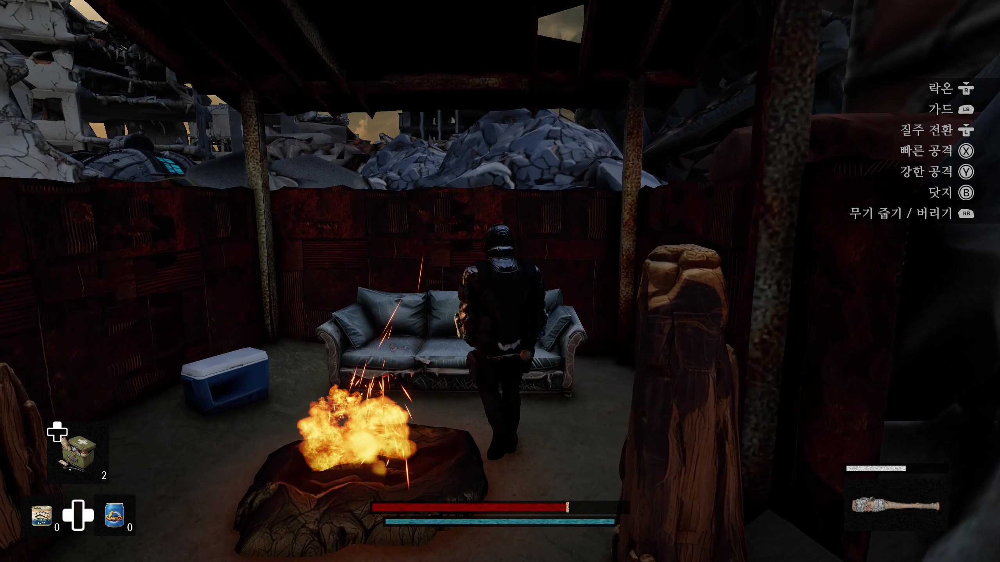
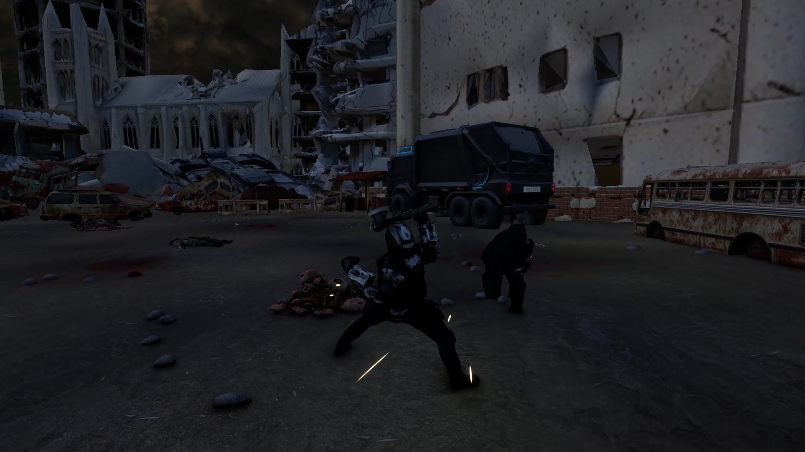

01 · 아이디어
당시 즐겨 하던 액션 RPG를 소규모 인원으로도 만들 수 있을까 하는 호기심에서 시작했습니다.
02 · 무엇을 만든 건지
City Of Rubble은 Duskore 팀이 Unity로 제작한 3D 액션 RPG입니다. 2025년 8월 4일부터 9월 4일까지 제작하여 제1회 바르코 3D 게임 제작 공모전에 출품했습니다.
NC AI 공식 발표에서 우수상 수상작으로 선정됐습니다.
03 · 환경
- 팀
- Duskore · 2인
- 제작 기간
- 2025.08.04–2025.09.04
- 구현 환경
- Unity · 3D 액션 RPG
- 담당 역할
- 게임 기획·AI 에셋 제작·Unity 적용 담당
프로그래밍은 팀원 1명 담당 · 테스트는 공동 진행
AI 활용과 에셋 제작
Whisk → VARCO 3D → Blender → Mixamo(캐릭터 리깅) → Unity의 흐름으로 모델을 제작하고 게임에 적용했습니다.
제출 발표 자료 기준 지형을 제외한 에셋 95개를 VARCO 3D로 제작했습니다. 외부 텍스처도 사용했으며, 모든 시각자료를 AI로 생성한 것은 아닙니다.
04 · 작업물
게임 화면


플레이 영상
영상이 표시되지 않으면 위 링크로 열어 주세요. 영상 재생에는 YouTube 연결이 필요합니다.
2025년 원작 제작 때 흔들리는 의복에 자동 리깅의 부적절한 본 가중치가 붙는 문제를 확인했습니다. 캐릭터를 인간형·몸에 붙는 의복으로 제한하고, 이 조건에 맞춰 로봇 포스트 아포칼립스 설정을 택했습니다.
Duskore 팀으로 2025년 NC AI VARCO 3D 인디게임 공모전 우수상을 수상했습니다. 출품작 영상은 9분 27초입니다.
2026.10.20에 시작한 리뉴얼은 별도 후속 개발입니다. 이 페이지의 화면·제작기간·에셋 수·수상·영상은 모두 2025년 공모전 출품작에 해당합니다.